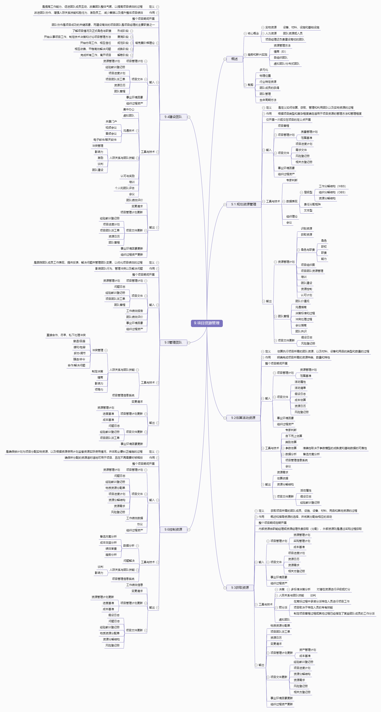

9.项目资源管理

概述
核心概念
实物资源
设备、材料、设施和基础设施
人力资源
团队资源或人员
项目经理还负责建设高校的团队
趋势和新兴实践
资源管理方法
情商（EI）
自组织团队
虚拟团队/分布式团队
裁剪
多元化
物理位置
行业特定资源
团队成员的获得
团队管理
生命周期方法
9.1 规划资源管理
定义
是定义如何估算、获取、管理和利用团队以及实物资源的过程
作用
根据项目类型和复杂程度确定适用于项目资源的管理方法和管理程度
仅开展一次或仅在项目的定义点开展
输入
项目章程
项目管理计划
质量管理计划
范围基准
项目文件
项目进度计划
需求文件
风险登记册
相关方登记册
事业环境因素
组织过程资产
工具与技术
专家判断
数据表现
层级型
工作分解结构（WBS）
组织分解结构（OBS）
资源分解结构
责任分配矩阵
文本型
组织理论
会议
输出
资源管理计划
识别资源
获取资源
角色与职责
角色
职权
职责
能力
项目组织图
项目团队资源管理
培训
团队建设
资源控制
认可计划
团队章程
团队价值观
沟通指南
决策标准和过程
冲突处理过程
会议指南
团队共识
项目文件更新
假设日志
风险登记册
9.2估算活动资源
定义
估算执行项目所需的团队资源，以及材料、设备和用品的类型和数量的过程
作用
明确完成项目所需的资源种类、数量和特性
整个项目期间开展
输入
项目管理计划
资源管理计划
范围基准
项目文件
活动属性
活动清单
假设日志
成本估算
资源日历
风险登记册
事业环境因素
组织过程资产
工具与技术
专家判断
自下而上估算
类别估算
参数估算
准确性取决于参数模型的成熟度和基础数据的可靠性
数据分析
备选方案分析
项目管理信息系统
会议
输出
资源需求
估算依据
资源分解结构
项目文件更新
活动属性
假设日志
经验教训登记册
9.3获取资源
定义
获取项目所需的团队成员、设施、设备、材料、用品和其他资源的过程
作用
概述和指导资源的选择，并将其分配给相应的活动
整个项目期间定期开展
内部资源由职能经理或资源经理负责获取（分配），外部资源则是通过采购过程获取
输入
项目管理计划
资源管理计划
采购管理计划
成本基准
项目文件
项目进度计划
资源日历
资源需求
相关方登记册
事业环境因素
组织过程资产
工具与技术
决策
多标准决策分析
对潜在资源进行评级或打分
人际关系与团队技能
谈判
预分派
在竞标过程中承诺分派特定人员进行项目工作
项目取决于特定人员的专有技能
制定项目章程过程或其他过程已经指定了某些团队成员的工作分派
虚拟团队
输出
物质资源分配单
项目团队派工单
资源日历
变更请求
项目管理计划更新
资产管理计划
成本基准
项目文件更新
经验教训登记册
项目进度计划
资源分解结构
资源需求
风险登记册
相关方登记册
事业环境因素更新
组织过程资产更新
9.4建设团队
定义
是提高工作能力，促进团队成员互动，改善团队整体气氛，以提高项目绩效的过程
作用
改进团队协作，增强人际关系技能和胜任力、激励员工、减少摩擦以及提升整体项目绩效
整个项目期间开展
团队协作是项目成功的关键因素，而建设高效的项目团队是项目经理的主要职责之一
塔克曼阶梯理论
形成阶段
了解项目情况及正式角色与职责
震荡阶段
开始从事项目工作、制定技术决策和讨论项目管理方法
规范阶段
开始协同工作，相互信任
成熟阶段
相互依靠，平稳高效解决问题
解散阶段
完成所有工作，离开项目
输入
项目管理计划
资源管理计划
项目文件
经验教训登记册
项目进度计划
项目团队派工单
资源日历
团队章程
事业环境因素
组织过程资产
工具与技术
集中办公
虚拟团队
沟通技术
共享门户
视频会议
音频会议
电子邮件/聊天软件
人际关系与团队技能
冲突管理
影响力
激励
谈判
团队建设
认可与奖励
培训
个人和团队评估
会议
输出
团队绩效评价
变更请求
项目管理计划更新
项目文件更新
经验教训登记册
项目进度计划
项目团队派工单
资源日历
团队章程
事业环境因素更新
组织过程资产更新
9.5管理团队
定义
是跟踪团队成员工作表现，提供反馈，解决问题并管理团队变更，以优化项目绩效的过程
作用
影响团队行为、管理冲突以及解决问题
整个项目期间开展
输入
项目管理计划
资源管理计划
项目文件
问题日志
经验教训登记册
项目团队派工单
团队章程
工作绩效报告
团队绩效评价
事业环境因素
组织过程资产
工具与技术
人际关系与团队技能
冲突管理
直接合作、尽早、私下处理冲突
撤退/回避
缓和/包容
妥协/调节
强迫/命令
合作/解决问题
制定决策
情商
影响力
领导力
项目管理信息系统
输出
变更请求
项目管理计划更新
资源管理计划
进度基准
成本基准
项目文件更新
问题日志
经验教训登记册
项目团队派工单
事业环境因素更新
9.6控制资源
定义
是确保按计划为项目分配实物资源，以及根据资源使用计划监督资源实际使用情况，并采取必要纠正措施的过程
作用
确保所分配的资源适时适地可用于项目，且在不再需要时被释放
整个项目期间开展
输入
项目管理计划
资源管理计划
项目文件
问题日志
经验教训登记册
物质资源分配单
项目进度计划
资源分解结构
资源需求
风险登记册
工作绩效数据
协议
组织过程资产
工具与技术
数据分析
备选方案分析
成本效益分析
绩效审查
趋势分析
问题解决
人际关系与团队技能
谈判
影响力
项目管理信息系统
输出
工作绩效信息
变更请求
项目管理计划更新
资源管理计划更新
进度基准
成本基准
项目文件更新
假设日志
问题日志
经验教训登记册
物质资源分配单
资源分解结构
风险登记册
{kind=link}